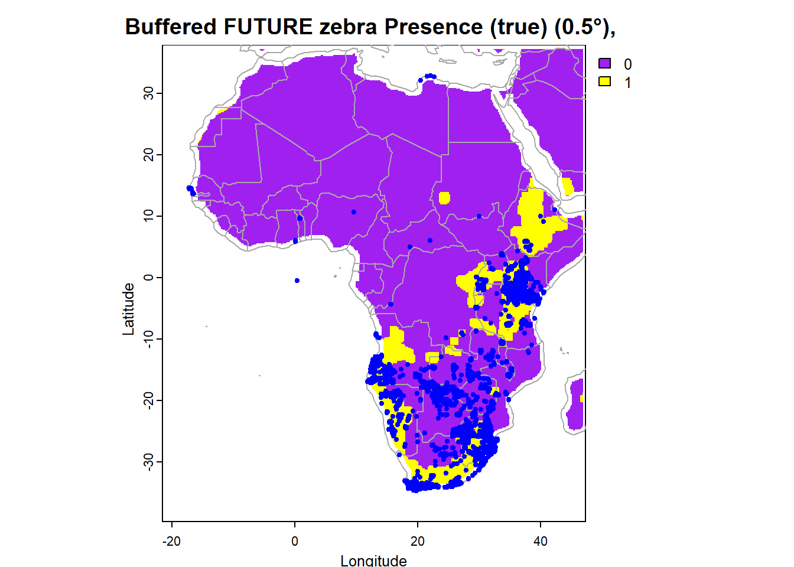

spatialdistributionassignment3
The Great Re-range-ment: Changing Distributions of Panthera leo (Lion) and Equus quagga (Plains Zebra) Across Africa Under Present and Future Climate Conditions
Introduction
This analysis focuses on understanding the distribution of Panthera leo and Equus quagga across Africa, under present and future climate conditions. The estimated lion population has decreased significantly over the years from 33,292 in 2006 to approximately 23,000 in 2023, with the steepest declines being observed in the West and Central Africa (Bauer, 2023). While some subpopulations in South Africa remain stable as a result of well-funded conservation management efforts, many others across the continent face increasing threats from changing climate, habitat loss, human threat and human-wildlife conflict. The case is the same for the plains zebra, Equus quagga. The estimated plains zebra population across Africa, as of 2016, is approximately 150 000- 250 000 and they are classed as ‘near threatened’ by the IUCN red list (King, 2016). While zebras are much more abundant than lions, their current population trend also shows a decline, with total population estimates in Africa being around 660,000 in 2002 (Hack et al. 2002). Climate change has emerged as a critical factor that is influencing the distribution of these species in many ways. For example, through changing prey availability, vegetation growth and quality, increasing temperature stress and water availability. Moreover, as habitats become less suitable, Panthera leo and Equus quagga may encroach onto human settlements, increasing the potential from human-wildlife conflict and endangering these species even further. As such this spatial modelling analysis aims to uncover the trajectory of their distributions in a way that might inform future conservation strategies.
Downloading species 1 and 2 data, the world map and the present bio-climactic data:
#Downloading gbif data for species 1, which in this case is 'Panthera leo', the lion.
#Defines the filepath for storing the data
species.gbif1_file <- here("data", "raw", "species.gbif_lion.rds")
#Check if the file exists (to prevent re downloading unnecessarily)
#if the file does exist then load the saved data
if (!file.exists(species.gbif1_file)) {
species.gbif1 <- gbif("panthera", "leo", geo = TRUE)
saveRDS(species.gbif1, species.gbif1_file)
} else {
species.gbif1 <- readRDS(species.gbif1_file)
}
#Extract the lat and lon columns from species.gbif1: combine lon (longitude) and lat (latitude columns from species.gbif1 into a matrix), removes rows containing NA values, converts matrix to data frame, renames columns 'lon' and 'lat'.
species.coords1 <- cbind(species.gbif1$lon, species.gbif1$lat)
species.coords1 <- na.omit(species.coords1)
species.coords1 <- data.frame(species.coords1)
colnames(species.coords1) <- c("lon", "lat")#Downloading gbif data for species 2, which in this case is 'Equus quagga', the zebra.
species.gbif2_file <- here("data", "raw", "species.gbif_zebra.rds")
#Check if the file exists (to prevent re downloading unnecessarily)
#if the file does exist then load the saved data
if (!file.exists(species.gbif2_file)) {
species.gbif2 <- gbif("equus", "quagga", geo = TRUE)
saveRDS(species.gbif2, species.gbif2_file)
} else {
species.gbif2 <- readRDS(species.gbif2_file)
}
#Extract the lat and lon columns from species.gbif2:
species.coords2 <- cbind(species.gbif2$lon, species.gbif2$lat)
species.coords2 <- na.omit(species.coords2)
species.coords2 <- data.frame(species.coords2)
colnames(species.coords2) <- c("lon", "lat")#Downloading the world map and plotting
wrld_simpl <- getMap(resolution = "coarse")dir.create(here("data", "raw", "present"), recursive = TRUE)Warning in dir.create(here("data", "raw", "present"), recursive = TRUE):
'C:\Users\hanab\OneDrive -
Nexus365\spatialdistributionassignment3\data\raw\present' already exists# Download bioclimatic data from the worldclim database and convert to Raster format
bio.data <- worldclim_global(var = "bio", res = 10, path = here("data", "raw", "present"))
names(bio.data) <- paste0("bio", 1:19)dir.create(here("data", "raw", "future"), recursive = TRUE)Warning in dir.create(here("data", "raw", "future"), recursive = TRUE):
'C:\Users\hanab\OneDrive -
Nexus365\spatialdistributionassignment3\data\raw\future' already exists#Download future bio data
future.bio.data <- cmip6_world(
model = "CanESM5",
var = "bio",
ssp = "245",
res = 10,
time = "2061-2080",
path = here("data", "raw", "future")
)
names(future.bio.data) <- names(bio.data)Q1: Species 1 distribution modelling
Run linear models to predict the present-day distribution of species 1 using climate variables and use them to present a map of its current distribution. Which set of climatic variables best explain the current distribution of the species?
a) Preparing the Panthera leo spatial data for ecological modelling
#Plot the global panthera leo distribution on the world map, setting the xlim and ylim to span the -165,165 and -65,65 respectively (so all data points are visualised)
plot(wrld_simpl, xlim=c(-165,165), ylim=c(-65,65), axes = TRUE, col = "light yellow")
# Add points for panthera leo in red
points(species.coords1, col = "red", cex = 0.75)
title(main = 'Global distribution of Panthera leo (lion)',
xlab = 'Longitude',
ylab = 'Latitude') #Create a function to trim the coordinates
trim.coords <- function(x, latmin, latmax, lonmin, lonmax) {
x[x$lon >= lonmin & x$lon <= lonmax & x$lat >= latmin & x$lat <= latmax, ]
}
#Apply the function to species.coords1
species1.coords.trim <- trim.coords(species.coords1, latmin = -40, latmax = 40, lonmin = -20, lonmax = 55)
#Define the file path for the processed data
species1_trimmed_file <- here("data", "processed", "species1_coords_trimmed.rds")
#Save the processed (trimmed) data for species 1
saveRDS(species1.coords.trim, species1_trimmed_file)
#Plot data on world map again but with the trimmed coordinates
plot(wrld_simpl, xlim=c(-25,55), ylim=c(-40,40), axes = TRUE, col = "light yellow")
# Add points for panthera leo in red
points(species1.coords.trim, col = "red", cex = 0.75)
title(main = 'Distribution of Panthera leo across Africa',
xlab = 'Longitude',
ylab = 'Latitude') #Creates a rasterised land mask from the world map within the defined extent. This prevents pseudoabsences from being placed in ocean/uninhabitable areas.
mask <- rasterize(wrld_simpl, raster(e, res=0.5))
#Because true absence data (places where the species is confirmed to be absent) is usually unavailable, the script now generates "pseudo-absences" (random background locations assumed not to contain the species).
#Generate 500 random background points within the study region
set.seed(0) #ensures random processes are reproducible
bg <- randomPoints(mask, 500, ext=e)
colnames(bg) <- c("lon", "lat")
#Visualise the results
plot(crop(africa_map, e), col="grey90", legend=FALSE, border = NA,
main="Panthera leo occurrences across Africa with background points")
points(bg, col="black", pch=20, cex=0.7)
points(species1.coords.trim, col="red", pch=20, cex=0.7)b) Creating a model to predict the present day distribution of Panthera leo
An optimal model will be one that more closely matches the observed presence and absence distribution of lions. The optimal model will contain appropriate climactic variables which are the most suitable predictors of lion distribution.Below I create the model with all 15 variables before refining it further.
#create a model including all 15 climactic variables
full_model <- glm(pa ~ bio1+bio2+bio3+bio4+bio5+bio6+bio7+bio8+bio9+bio10+
bio11+bio12+bio13+bio14+bio15,
family = binomial(link = "logit"), #tells R to use logistic regression
data = envtrain)Below I now select the most biologically relevant variables with respect to lion ecology. When modelling lion distribution I will prioritise bioclimactic variables which influence and are more relevant to habitat suitability, prey availability and water sources. I am therefore going to select the temp related variables: Bio1 (annual mean temperature), bio5 (max temp of the warmest month), bio9 (mean temp of the driest quarter), and precipitation related variables: bio12 (annual precipitation), bio13 (precipitation of the wettest month) and bio15 (precipitation seasonality). The precipitation related variables are key in affecting water sources and also the presence of vegetation (and therefore prey availability), which typically influence lion distribution.
#creating a model which contains the most biologically relevant variables to lion distribution.
gm1 <- glm(pa ~ bio1+bio5+bio9+bio12+bio13+bio15,
family = binomial(link = "logit"), #tells R to use logistic regression
data = envtrain)
summary(gm1)
Call:
glm(formula = pa ~ bio1 + bio5 + bio9 + bio12 + bio13 + bio15,
family = binomial(link = "logit"), data = envtrain)
Coefficients:
Estimate Std. Error z value Pr(>|z|)
(Intercept) 15.2945971 0.6565146 23.30 < 2e-16 ***
bio1 0.6859833 0.0440613 15.57 < 2e-16 ***
bio5 -0.5374083 0.0347997 -15.44 < 2e-16 ***
bio9 -0.3630678 0.0223847 -16.22 < 2e-16 ***
bio12 -0.0077009 0.0004692 -16.41 < 2e-16 ***
bio13 0.0398135 0.0024784 16.06 < 2e-16 ***
bio15 -0.0318608 0.0039577 -8.05 8.26e-16 ***
---
Signif. codes: 0 '***' 0.001 '**' 0.01 '*' 0.05 '.' 0.1 ' ' 1
(Dispersion parameter for binomial family taken to be 1)
Null deviance: 4124 on 11618 degrees of freedom
Residual deviance: 2828 on 11612 degrees of freedom
(4 observations deleted due to missingness)
AIC: 2842
Number of Fisher Scoring iterations: 7#the p values indicate that all of these variables are significant predictors of lion distribution, however I feel that 6 variables overfits the model so I will try to refine which variables I choose. #Out of these biologically relevant variables, I will use varImp() to assess the importance of each variable , ranking most important variable at the top of the list
importance <- varImp(gm1, scale = FALSE)
print(importance) Overall
bio1 15.568833
bio5 15.442879
bio9 16.219466
bio12 16.412771
bio13 16.064403
bio15 8.050292#bio15, variability in precipitation, has an importance that is nearly half of the importance (8.042061) of the other variables. Given this, and the fact that I am retaining variables bio12 and bio13, I am going to exclude bio15 to make the model simpler and prevent overfitting. Bio12 and bio13 provide information on annual precipitation and precipitation of the wettest month which I feel is sufficient.I will now assess the AIC of the model with 5 variables and the model with 6 variables to hopefully confirm that the 5 variable model is better.
#creating model with 5 variables (excludes bio15) called gm1_reduced
gm1_reduced <- glm(pa ~ bio1 + bio5 + bio9 + bio12 + bio13,
family = binomial(link = "logit"),
data = envtrain)
summary(gm1_reduced)
Call:
glm(formula = pa ~ bio1 + bio5 + bio9 + bio12 + bio13, family = binomial(link = "logit"),
data = envtrain)
Coefficients:
Estimate Std. Error z value Pr(>|z|)
(Intercept) 15.3304717 0.6559888 23.37 <2e-16 ***
bio1 0.6123803 0.0407568 15.03 <2e-16 ***
bio5 -0.6051559 0.0336342 -17.99 <2e-16 ***
bio9 -0.2941444 0.0198077 -14.85 <2e-16 ***
bio12 -0.0052307 0.0003556 -14.71 <2e-16 ***
bio13 0.0258805 0.0017873 14.48 <2e-16 ***
---
Signif. codes: 0 '***' 0.001 '**' 0.01 '*' 0.05 '.' 0.1 ' ' 1
(Dispersion parameter for binomial family taken to be 1)
Null deviance: 4124.0 on 11618 degrees of freedom
Residual deviance: 2894.3 on 11613 degrees of freedom
(4 observations deleted due to missingness)
AIC: 2906.3
Number of Fisher Scoring iterations: 7AIC(gm1, gm1_reduced) df AIC
gm1 7 2841.964
gm1_reduced 6 2906.274#The AIC of gm1_reduced is higher, indicating that the model including bio15 is better. Although it had a lower VarImp, it is still important to include. I still need to decide which variable to remove as I want my model to contain max 5 variables to prevent overfitting.Below, I am going to evaluate the six variables based on multicollinearity using VIF and hopefully remove variables which are collinear to improve the model.
#assess multicollinearity using VIF
vif(gm1) bio1 bio5 bio9 bio12 bio13 bio15
7.716559 7.010696 3.387334 11.619056 9.342725 5.385585 #the VIF output indicates that bio12 and bio13 have the highest VIF values, suggesting multicollinearity so to try and improve the model I will exclude bio12 first and compare model performance to gm1.
#Refit model excluding bio12
gm1_test <- glm(pa ~ bio1 + bio5 + bio9 + bio13 + bio15,
family = binomial(link = "logit"),
data = envtrain)
AIC(gm1, gm1_test) df AIC
gm1 7 2841.964
gm1_test 6 3094.966#The AIC of gm1_test increases compared to the AIC of gm1, suggesting that excluding bio12 hurts the model. I will now remove bio13 instead and assess AICs.#Refit model excluding bio13
gm1_test2 <- glm(pa ~ bio1 + bio5 + bio9 + bio12 + bio15,
family = binomial(link = "logit"),
data = envtrain)
AIC(gm1, gm1_test2) df AIC
gm1 7 2841.964
gm1_test2 6 3095.712#Again, the AIC of the model excluding bio13 increases, suggesting gm1 is a better model.
#bio5 and bio1 also have moderately high VIF's so I will remove these one at a time and assess the new model's performance.#excluding bio5
gm1_test3 <- glm(pa ~ bio1 + bio9 + bio12 + bio13 + bio15,
family = binomial(link = "logit"),
data = envtrain)
AIC(gm1, gm1_test3) df AIC
gm1 7 2841.964
gm1_test3 6 3139.940#AIC of the model excluding bio5 increases compared to gm1 so again gm1 remains better. I will now exclude bio1.#excluding bio1
gm1_test4 <- glm(pa ~ bio5 + bio9 + bio12 + bio13 + bio15,
family = binomial(link = "logit"),
data = envtrain)
AIC(gm1, gm1_test4) df AIC
gm1 7 2841.964
gm1_test4 6 3207.079#AIC of the model excluding bio1 increases compared to gm1 so again gm1 remains better. #For the sake of holisticness I am going to see if dropping bio9, even though it has a VIF value \<5, makes the model any better.
gm1_test5 <- glm(pa ~ bio1 + bio5 + bio12 + bio13 + bio15,
family = binomial(link = "logit"),
data = envtrain)
AIC(gm1, gm1_test5) df AIC
gm1 7 2841.964
gm1_test5 6 3180.180#Again, the AIC increases, indicating gm1 is a better model. After systematically testing the removal of each variable using AIC, none of the biologically relevant predictors could be excluded without severely compromising model performance. As such, I have decided to keep all 6 variables as they are biologically and statistically important.Finally, to conclude the model has good performance I will evaluate it by assessing AUC and Cor.
#evaluate model
gm1eval <- evaluate(testpres, testbackg, gm1)
print(gm1eval)class : ModelEvaluation
n presences : 11119
n absences : 500
AUC : 0.8221486
cor : 0.4264997
max TPR+TNR at : 2.249401 #AUC is 0.8213 indicating good discriminatory power of the model to predict lion presence and absence, and cor is 0.4 which further supports the model's predicative performance. As such, I am going to retain all six variables as the best balance between biological relevance and statistical performance.c) Fitting the ‘gm1’ model:
#Predicting the distribution of panthera leo based on the model, gm1.
pg <- predict(bio.data, gm1, ext = e, type = "response")
pg <- crop(pg, e)
#pg is a raster layer, like for our bioclim variables, Now it is representing the probability of occurrence from our linear model, for our area of extent e.
#Visualising predicted lion distribution based on gm1
plot(pg, main = "Predicted suitable habitats for lions based on gm1")
#adding country boundaries
plot(wrld_simpl, add = TRUE, border = "dark grey")
#adding our observed locality data for lions
points(species1.coords.trim, col="red", pch=20, cex=1.5)To generate this plot, I built a logistic regression model that predicted lion distribution (indicated by habitat suitability) using present bioclimatic variables. Starting with 15 climate variable predictors, I refined the model based on biological relevance, variable importance, AIC, and multicollinearity (VIF). I retained six key temperature and precipitation variables in the final model. Evaluation showed good predictive performance (AUC 0.82). The results of the model suggest lion distribution has been predicted well. The yellow regions which indicate good habitat suitability and therefore high probability of lion occurrence align nicely with the actual observed occurrences of lions (red points). The model has captured the presence of lions in South and East Africa well, as these are known lion strongholds. Notably, although the model predicts Madagascar as a suitable habitat for lions, there are no lion occurrences there. Lions have never naturally occurred in Madagascar likely due to geographical isolation and the ocean barrier that has historically prevented lion dispersal. As such this highlights a limit of these types of species distribution models in that they don’t account for biogeographical history or physical dispersal barriers.
I am now going to apply a threshold to the model’s predictions to generate a binary raster that shows predicted presence and absence of Panthera leo.
#Calculate the threshold value for presence/absence based on the 'prevalence' method from the model evaluation
tr <- threshold(gm1eval, "prevalence")
#increase the top margin so title isn't cut off
par(mar = c(5, 4, 6, 2))
#plot binary raster map showing presence (true) and absence (false) of lions
#pg is the continuous probability raster which we convert to binary based upon the threshold
plot(pg > tr,
main = "Predicted absence (false) and presence (true) of lions based upon gm1",
xlab = "Longitude",
ylab = "Latitude")
#Plotting the world map and adding country borders
plot(wrld_simpl, add = TRUE, border = "dark grey")
#Plotting the observed lion occurrences in red
points(species1.coords.trim, col = "red", pch = 20, cex = 0.8)
To generate this plot, I applied a threshold to the model’s predictions to generate a binary raster that shows predicted presence and absence of lions. The results of the plot show that the yellow regions, where lions are predicted to be present, closely align with the true lion occurrences as most of the red points are within the yellow area. By contrast, the purple regions which is where the model predicts lions would be absent, tend to align with true lion absences as there aren’t many red points in these regions. There appear to be a few possible false negatives where the model predicts lions to be absent when actually the red points indicate true occurrence. We cannot know for sure what is causing this; it may be the threshold is too strict (causing some true presences to be classified as absences) or perhaps the model is missing other climactic variables - for example, maybe there are specific water holes in these regions that are influencing lion distribution
Which set of climatic variables best explain the current distribution of the species?
I reduced the 15 climate variables to six variables based on biological relevance. I then assessed the importance of each variable and the VIFs of each variable. I removed each variable one at a time and assessed whether the new model was better than the model containing all 6. Ultimately, the model was better when it included all six. I found that the best set of climate variables are bio1, bio5 bio9 bio12, bio13 and bio15. Of course, there are many other ways to justify retention and removal of variables, however I have justified in earlier text why I feel these six are the best set for predicting lion distribution whilst simultaneously considering statistical reasoning and biological reasoning.
Q2: Species 2 distribution modelling
Run linear models to predict the present-day distribution of species 2 using climate variables and use them to present maps of its current distribution. Which set of climatic variables best explain the current distribution of the species?
a) Preparing the Equus quagga spatial data for ecological modelling
#Plot the zebra distribution on the world map, setting the xlim and ylim to span the -165,165 and -65,65 respectively (so all data points are visualised)
plot(wrld_simpl, xlim=c(-165,165), ylim=c(-65,65), axes = TRUE, col = "light yellow")
# Add points for zebra in blue
points(species.coords2, col = "blue", cex = 0.5)
title(main = 'Global distribution of Equus quagga (zebra)',
xlab = 'Longitude',
ylab = 'Latitude') #Apply the function created earlier, trim.coords(), to species.coords2
species2.coords.trim <- trim.coords(species.coords2, latmin = -40, latmax = 40, lonmin = -20, lonmax = 55)
#define the file path for the trimmed species 2 data
species2_trimmed_file <- here("data", "processed", "species2_coords_trimmed.rds")
#save the processed (trimmed) data
saveRDS(species2.coords.trim, species2_trimmed_file)
#Plot zebra data on world map again but with the trimmed coordinates
plot(wrld_simpl, xlim=c(-25,55), ylim=c(-40,40), axes = TRUE, col = "light yellow")
# Add points for zebra in blue
points(species2.coords.trim, col = "blue", cex = 0.5)
title(main = 'Distribution of Equus quagga across Africa',
xlab = 'Longitude',
ylab = 'Latitude') #Creates a rasterised land mask from the world map within the defined extent. This prevents pseudoabsences from being placed in ocean/uninhabitable areas.
mask1 <- rasterize(wrld_simpl, raster(e1, res=0.5))
#Because true absence data (places where the species is confirmed to be absent) is usually unavailable, the script now generates "pseudo-absences" (random background locations assumed not to contain the species).
# Generate 500 random background points within the study region (zebra pseudo absence points)
set.seed(0) #makes randomised processes reproducible
bg1 <- randomPoints(mask1, 500, ext=e1)
colnames(bg1) <- c("lon", "lat")
# Visualise the zebra presence and absence points
plot(crop(africa_map1, e1), col="grey90", legend=FALSE, border = NA,
main="Equus quagga occurrences across Africa with background points")
points(bg1, col="black", pch=20, cex=0.7)
points(species2.coords.trim, col="blue", pch=20, cex=0.5)#crop the climactic variable data to zebra extent
bio.data1 <- crop(bio.data, e1)#Prepare training dataset for zebra model
#combine the presence data and the background data in one data frame
train1 <- rbind(species2.coords.trim, bg1)
# Create a vector of 1s and 0s to indicate presence (1) and absence (0)
pb_train1 <- c(rep(1, nrow(species2.coords.trim)), rep(0, nrow(bg1)))
# Extract the bioclimatic data for the presence and background points
envtrain1 <- extract(bio.data1, train1)
envtrain1 <- data.frame(cbind(pa = pb_train1, envtrain1)) #training dataset with both presence (1) and pseudo-absence (0) data.
# And for each set separately
testpres1 <- data.frame(extract(bio.data1, species2.coords.trim)) #test set with only presence data (for validation)
testbackg1 <- data.frame(extract(bio.data1, bg1)) #test set with only background points (for validation).# Fit full model with all 15 variables
full_model1 <- glm(pa ~ bio1+bio2+bio3+bio4+bio5+bio6+bio7+bio8+bio9+bio10+
bio11+bio12+bio13+bio14+bio15,
family = binomial(link = "logit"), #tells R to use logistic regression
data = envtrain1)b) Creating a model to predict the present day distribution of Equus quagga
I will now select the most biologically relevant climate variables with respect to the ecology of Equus quagga. I want to include key precipitation drivers as these impact water availability which in turn influences zebra foraging behaviour and therefore distribution. I think it makes sense to include bio12 (annual precipitation) as this directly influences grass productivity which makes up the majority of the plains zebra’s herbivorous diet. Annual precipitation also directly influences water availability which is important for determining zebra distribution given the necessity of water sources for survival. Bio15, precipitation seasonality is also important as zebras as they tend to migrate in response to seasonal rains. Bio14, precipitation of the driest month is important because it helps capture an important limiting factor of their survival; drought stress. As such low Bio14 values (very dry months) will help to identify regions where water drops below survival thresholds. The range of zebra’s is strongly linked to the presence of permanent water sources so this is an key variable influencing distribution.
I also want to include key temperature drivers. Bio1, mean annual temperature, is important as plains zebras typically thrive in grasslands and savannas, which are warm tropical and subtropical environments. By contrast, regions with cooler annual temperatures may lack grasslands or be too cold for zebra tolerance, thus affecting their presence here. Bio4, temperature seasonality, reflects how temperature varies throughout the year which is important for determining zebra distribution as it affects water availability and foraging quality. Bio6, minimum temperature of the coldest month, is also important as zebras typically frequent warmer regions of Africa and very cold temperatures limit grass growth which also affects foraging behaviour. This variable would therefore help to define when their range is limited by colder areas across southern Africa and in elevated regions.
#fitting a model with the chosen biologically relevant variables
set.seed(0) #setting a seed because output changed for some reason
gm2 <- glm(pa ~ bio12+bio15+bio14+bio1+bio4+bio6,
family = binomial(link = "logit"), #tells R to use logistic regression
data = envtrain1)
summary(gm2)
Call:
glm(formula = pa ~ bio12 + bio15 + bio14 + bio1 + bio4 + bio6,
family = binomial(link = "logit"), data = envtrain1)
Coefficients:
Estimate Std. Error z value Pr(>|z|)
(Intercept) 17.5920767 0.8126302 21.648 < 2e-16 ***
bio12 -0.0033133 0.0002655 -12.478 < 2e-16 ***
bio15 0.0021131 0.0033328 0.634 0.526
bio14 0.0518368 0.0081212 6.383 1.74e-10 ***
bio1 -0.0678213 0.0470702 -1.441 0.150
bio4 -0.0207265 0.0009472 -21.882 < 2e-16 ***
bio6 -0.4805434 0.0334678 -14.358 < 2e-16 ***
---
Signif. codes: 0 '***' 0.001 '**' 0.01 '*' 0.05 '.' 0.1 ' ' 1
(Dispersion parameter for binomial family taken to be 1)
Null deviance: 4467.4 on 16276 degrees of freedom
Residual deviance: 2842.7 on 16270 degrees of freedom
(6 observations deleted due to missingness)
AIC: 2856.7
Number of Fisher Scoring iterations: 8#the p values indicate that bio12, bio14, bio4 and bio6 are all statistically significant variables for predicting zebra distribution while bio15 and bio1 aren't significant. Bio15 (precipitation seasonality) quantifies how much rainfall fluctuates through seasons, which is important for zebra's as they rely on seasonal water availability and subsequent vegetation growth. Given this biological importance, I am going to keep bio15 in the model.
#The results also show bio1 (annual mean temperature) lacks statistical significance for determining zebra distribution, however I don't want to remove it straight away as I believe it also is still carries biological importance as zebra's are fairly temperature sensitive.
#To inform the decision to drop bio1 I checked for multicollinearity. If bio1 is highly colinear with another variable then it would make sense to drop bio1 but retain the variable that captures similar information. #I calcuated VIFs (Variable Inflation Factor). This revealed that bio6 (minimum temp of coldest month) had a high VIF of 8.539939, indicating possible multicollinearity. I suspected this could be due to correlation with bio1 since both are temp related variables.
set.seed(0)
vif(gm2) bio12 bio15 bio14 bio1 bio4 bio6
2.753807 2.652596 2.335751 4.637216 5.357642 8.536496 #I removed bio1 and created a model 'gm2_test1', and then tested the VIF. The VIF for bio6 dropped to 2.647243, suggesting that bio1 was driving multicollinearity. As such, I have decided to retain bio6 (which is important for capturing cold limits) and drop bio1.
set.seed(0)
gm2_test1 <- glm(pa ~ bio12+bio15+bio14+bio4+bio6,
family = binomial(link = "logit"), #tells R to use logistic regression
data = envtrain1)
vif(gm2_test1) bio12 bio15 bio14 bio4 bio6
2.713598 2.100705 2.330019 4.159711 2.647473 #As a final check of the new 5 variable model I compared the AIC value to that of the 6 variable model which included bio1 (gm2). The AIC difference was negligible (ΔAIC < 2), indicating both models perform identically. gm2_test1 therefore provides a simpler model with 5 variables, without sacrificing power.
AIC(gm2, gm2_test1) df AIC
gm2 7 2856.663
gm2_test1 6 2856.765#I then evaluated the gm2_test model predicative power with AUC. The AUC is 0.8575563 suggesting strong predicative power. The cor is 0.3, suggests a moderate alignment between the model's predictions and observed zebra presence. I am going to keep this model as this cor is consistent with ecological models where climate variables explain part of species distribution but not all of it. Also, combined with the high predicative power and my assessment of biological relevance of the variables, I feel the model remains appropriate.
set.seed(0)
gm2_test1eval <- evaluate(testpres1, testbackg1, gm2_test1)
gm2_test1evalclass : ModelEvaluation
n presences : 15777
n absences : 500
AUC : 0.8576092
cor : 0.2956783
max TPR+TNR at : 3.007358 #I also assessed AUC of the original 6 variable model, gm2. The AUC was almost identical, confirming that removing bio1 made the model simpler without decreasing predicative power.
gm2eval <- evaluate(testpres1, testbackg1, gm2)
gm2evalclass : ModelEvaluation
n presences : 15777
n absences : 500
AUC : 0.8577418
cor : 0.2943584
max TPR+TNR at : 2.995878 c) Fitting the ‘gm2_test1’ model:
#Predicting the distribution of Equus quagga based on the model, gm2_test1.
pg1 <- predict(bio.data1, gm2_test1, ext = e1, type = "response")
pg1 <- crop(pg1, e1)
# pg1 is a raster layer, like for our bioclim variables, but now representing the
# probability of occurrence from our linear model, for or area of extent e.
#Visualising predicted zebra distribution based on 'gm2_test1'
plot(pg1, main = "Predicted suitable habitats for zebras based on gm2_test1")
# Add country boundaries
plot(wrld_simpl, add = TRUE, border = "dark grey")
# Add our observed locality data for zebras
points(species2.coords.trim, col="blue", pch=20, cex=0.5)To generate this plot, I built a logistic regression model that predicted zebra distribution (indicated by habitat suitability) using present bioclimatic variables. Starting with 15 climate variable predictors, I refined the model based on biological relevance, variable importance, AIC, and multicollinearity (VIF). I retained five key temperature and precipitation variables in the final model. Evaluation showed good predictive performance (AUC 0.8).
The model appears to predict zebra habitat suitability fairly well; the yellow regions indicate high habitat suitability suggesting that zebra’s occur here. This aligns with the real occurrence points, the majority of which are in the yellow region. There are some yellow or greenish areas where the model predicts habitat suitability but zebras don’t have occurrences here. This could for example be due to lack of occurrence data in these regions. Alternatively, the model could have over-predicted that these areas are suitable, and the lack of species may be due to another unmodelled factor for example land use etc. By contrast, the purple regions predict low habitat suitability and align with the fact that observed occurrences aren’t in the purple areas.
I am now going to apply a threshold to the model’s predictions to generate a binary raster that shows predicted presence and absence of Equus quagga.
#Calculate the threshold value for presence/absence based on the 'prevalence' method from the model evaluation
tr1 <- threshold(gm2_test1eval, "prevalence")
# Increase the top margin so title isn't cut off
par(mar = c(5, 4, 6, 2))
#plot binary raster map showing presence (true) and absence (false) of zebras
#pg1 is the zebra continuous probability raster which we convert to binary raster based upon the threshold
plot(pg1 > tr1,
main = "Predicted absence (false)/presence (true) of zebras based upon gm2_test1",
xlab = "Longitude",
ylab = "Latitude")
#Plotting th world map and adding country borders
plot(wrld_simpl, add = TRUE, border = "dark grey")
#Plotting the observed zebra occurrences in cyan so it shows up against the dark purple
points(species2.coords.trim, col = "cyan", pch = 20, cex = 0.8)
To generate this plot, I applied a threshold to the model’s predictions to generate a binary raster that shows predicted presence and absence of zebras. The model predicts zebra absence and presence fairly well. The purple regions are where the model predicts zebras would be absent. This aligns with the majority of the occurrence points that do indeed show zebra’s are absent in most of these regions. This also makes sense in terms of the fact that plains zebras are known to inhabit south and east Africa rather than the north where the majority of purple is. The yellow shows where the model predicts zebras to be present. This aligns with the known occurrence points appearing in the yellow region. There are a few occurrence points where the model predicts zebras would be absent, suggesting that while the model captures general distribution well, in some areas perhaps it underestimates habitat suitability. This could perhaps be local microclimate factors or environmental conditions in these regions that actually do make the land suitable for zebras (e.g. the presence of waterholes) but isn’t captured in the broader climate variables used in the model.
Q3: Distribution Overlap
Plot the overlap in distribution of the two species. Devise and calculate a metric for the degree of overlap between their ranges, explaining how you calculated it.
I am going to apply a buffer to the zebra and lion rasters to accept nearby occurrences, so that any pixels that say absent but are nearby to pixels that say present, can be converted to saying the species is present. This is to acccount for the ecological reality that animals move and likely interact if depicted as neighbouring each other. Then I will measure overlap according to this. The 0.5 degree buffer, which reflects ~55 km at the equator was chosen based on movement ecology and the home ranges of lions and zebras. While this buffer captures short term movement and local-scale interactions, it is however important to note that in future analysis I would consider testing larger buffers which would reflect the upper limits of lion and zebra range. According to (Nams et al, 2023), mean lion home range can be anywhere between 20-455km squared. Another study, (Klingel, 1969) also notes that the plains zebra can roam up to 1000km squared or even larger, and as such future analysis should use a buffer which reflects these larger roaming ranges.
#Creating buffer for lions and zebras
library(terra)
#convert binary raster from a RasterLayer to spat raster because I want to apply a buffer using terra() but terra::buffer() function won’t accept a RasterLayer.
# Convert thresholded raster properly into numeric (0/1) with terra's ifel()
zebra_binary_spat <- ifel(pg1 > tr1, 1, 0)
lion_binary_spat <- ifel(pg > tr, 1, 0)
#check raster resolution so that when I make the buffer 0.5 degrees, I know how many pixels that distance represents and can specify the buffer accordingly.
res(zebra_binary_spat)
res(lion_binary_spat)
#calculates the number of pixels that correspond to 0.5 degrees
pixel_size <- res(zebra_binary_spat)[1] # 0.1666667
buffer_deg <- 0.5
buffer_pixels <- round(buffer_deg / pixel_size) # ~3 pixels
#creates a square matrix that will be used as a weight matrix for the focal function: (square of (2*buffer_pixels + 1))
w <- matrix(1, nrow = (2 * buffer_pixels + 1), ncol = (2 * buffer_pixels + 1))
#apply the focal function to the raster layers to expand (buffer) the presence pixels
zebra_buffer <- focal(zebra_binary_spat, w = w, fun = max, na.policy = 'omit')
lion_buffer <- focal(lion_binary_spat, w = w, fun = max, na.policy = 'omit')#Visualising lion buffer
plot(lion_buffer,
main = "Predicted lion distribution with 0.5° buffer (0=absent, 1=present) ",
col = c("purple", "yellow"),
xlab = "Longitude",
ylab = "Latitude",
legend = TRUE)
# Add world map
plot(wrld_simpl, add = TRUE, border = "dark grey")
#Add observed lion occurrences in cyan
points(species1.coords.trim, col = "red", pch = 20, cex = 0.8)#Repeat with zebras
#Visualising zebra buffer
plot(zebra_buffer,
main = "Predicted zebra distribution with 0.5° buffer (0=absent, 1=present)",
col = c("purple", "yellow"),
xlab = "Longitude",
ylab = "Latitude",
legend = TRUE)
#Add world map
plot(wrld_simpl, add = TRUE, border = "dark grey")
#Add observed zebra occurrences in cyan
points(species2.coords.trim, col = "blue", pch = 20, cex = 0.8)
Both of the above plots were generated by applying a buffer and then visualising the predicted distributions. I can see that the edges of the yellow (presence) have expanded slightly, indicating that neighboring pixels have been converted to assume presence (if they were neighboring a pixel where the species was present).
Now I will overlay the distributions with the buffers applied to visually inspect overlap.
#check the extent and resolution of the lion and zebra buffered rasters. They need to be identical in order to overlay the rasters.
ext(zebra_buffer)
ext(lion_buffer)
res(zebra_buffer)
res(lion_buffer)
#They weren't identical; the zebra extent is smaller so I want to crop lion buffered raster to be the same as the zebra's. I also note that in future analysis I would avoid cropping extents by ensring they are already the same size at the start.
lion_crop <- crop(lion_buffer, zebra_buffer)
#Double check the extent and resolution now match (the output shows they do)
all.equal(res(zebra_buffer), res(lion_crop))#Now I can add the two buffered rasters together
overlap_raster <- zebra_buffer + lion_crop#Now I can visualise the overlayed rasters to see the overlap before calculating it
#plotting the raster with colouring
plot(overlap_raster,
breaks = c(-0.1, 0.5, 1.5, 2.5), #definingthe value ranges
col = c("white", "orange", "darkgreen"),
main = "The overlap of predicted zebra and lion presence with a (0.5° Buffer) applied",
xlab = "Longitude",
ylab = "Latitude",
legend = FALSE, #turns off auto legend
axes = TRUE)
#increases the top margin so title isn't cut off
par(mar = c(5, 4, 6, 2)) # bottom, left, top, right
#add world map outline on top
plot(wrld_simpl, add = TRUE, border = "dark grey")
#add legend
legend(x=-20, y=-10,
legend = c("No Presence", "One Species Present", "Overlap (Both Present)"),
fill = c("white", "orange", "darkgreen"),
border = "black",
bty = "n",
cex = 0.6)This plot was generated by applying a buffer to the lion and zebra binary rasters and then overlaying them. The visualisation of the overlap seems appropriate. Orange indicates presence of one of the species and based on the earlier plots of lion distribution, it likely is referring to the presence of lions. Where the plot shows dark green (overlap) seem correct based on the previous individual plots of where lions and zebras are present.
Now I will use Jaccard index as an overlap metric. I chose Jaccard to focus on potential real-world range overlap, allowing for ecological interactions in adjacent habitats. Jaccard is also a widely used measure of spatial overlap (Kei, 2021) and thus seems appropriate in this context.
#extract the raster values as a vector
vals <- values(overlap_raster)
#count overlap to create both present object and either present object
both_present <- sum(vals == 2, na.rm = TRUE)
either_present <- sum(vals %in% c(1, 2), na.rm = TRUE)
#calculate the Jaccard Index
jaccard_index <- both_present / either_present
#print result
cat("Jaccard Index (degree of overlap):", round(jaccard_index, 3), "\n")Jaccard Index (degree of overlap): 0.501 cat("Percent Overlap:", round(jaccard_index * 100, 1), "%\n")Percent Overlap: 50.1 %The code uses the Jaccard metric as a measure of lion and zebra distribution overlap. Each raster cell is a location where the presence of a species is recorded either present or absent. Each raster cell possesses a value; 2 means both species are present (1+1), 1 means one species is present and 0 means neither species are present. The code extracts the raster values as a vector and counts how many cells have a value of 2 and how many cells have a value of either 1 or 2. Jaccard is then calculated as a ratio of the overlap (both species present) to when either species are present. It is then multiplied by 100 to present a percentage overlap. In this case, we can see that the predicted lion and zebra overlap under current climate conditions is 50.1%.
Q4: Inter-species Distribution Dependence
Use a linear model to test whether the distribution of species 1 at the present time depends on the distribution of species 2, while also taking account of the effects of climatic variables.
The modeled presence/absence data for lions is currently in a binary raster format and the modeled presence/absence distribution for zebras is also in a binary raster format. As such, before I put these two variables into a new GLM, I need to extract the presence/absence data points from the binary rasters. This is because GLMs only take tabular data, but raster layers are spatial grids which can’t be directly inputted into a GLM.
library(terra)
#check the lion and zebra rasters have the same resolution and extent. The output shows they have the same resolution but not extent. binary_raster has a larger extent.
#The extent needs to be the same in order to stack the two rasters before I extract that data as a dataframe.
ext(binary_raster)
ext(binary_raster1)
res(binary_raster)
res(binary_raster1)
#Resampling binary_raster1 (the smaller raster, also the zebra raster) to binary_raster (the larger raster, also the lion raster). This preserves the broader geographic area.
binary_raster1_resampled <- resample(binary_raster1, binary_raster, method = "near")
#checking to make sure the extents now match (the output indicates that they do).
ext(binary_raster)
ext(binary_raster1_resampled)
res(binary_raster)
res(binary_raster1_resampled)
#stack the lion raster and the zebra raster into an object called raster_stack (stacking to maintain spatial alignment)
raster_stack <- c(binary_raster, binary_raster1_resampled)
names(raster_stack) <- c("binary_raster_converted", "binary_raster1_converted")
#convert the stacked rasters to a dataframe which I can input into my glm
glm_data <- as.data.frame(raster_stack, xy = TRUE)
colnames(glm_data)[3:4] <- c("lion_presence_converted", "zebra_presence_converted")
#check the glm_data. I noticed that when the raster data converted to a dataframe the values accidentally converted to logical TRUE/FALSE instead of numeric 1/0.
head(glm_data)
#convert the logical TRUE/FALSE back to numeric 1/0
glm_data$lion_presence_converted <- as.numeric(glm_data$lion_presence_converted)
glm_data$zebra_presence_converted <- as.numeric(glm_data$zebra_presence_converted)
#the dataframe contains NAs. To handle these, I will fill in the missing presence/absence values with 0, assuming that no data at a location indicates species absence (consistent with our earlier approach).
glm_data$lion_presence_converted[is.na(glm_data$lion_presence_converted)] <- 0
glm_data$zebra_presence_converted[is.na(glm_data$zebra_presence_converted)] <- 0glm_model <- glm(lion_presence_converted ~ zebra_presence_converted,
data = glm_data,
family = binomial(link = "logit"))
summary(glm_model)
Call:
glm(formula = lion_presence_converted ~ zebra_presence_converted,
family = binomial(link = "logit"), data = glm_data)
Coefficients:
Estimate Std. Error z value Pr(>|z|)
(Intercept) -1.396732 0.008445 -165.4 <2e-16 ***
zebra_presence_converted 2.255767 0.016579 136.1 <2e-16 ***
---
Signif. codes: 0 '***' 0.001 '**' 0.01 '*' 0.05 '.' 0.1 ' ' 1
(Dispersion parameter for binomial family taken to be 1)
Null deviance: 137278 on 111684 degrees of freedom
Residual deviance: 116461 on 111683 degrees of freedom
AIC: 116465
Number of Fisher Scoring iterations: 4The model suggest that the distribution of lions does depend on the distribution of zebras because the predictor variable zebra_presence_converted has a statistically significant p value of <2e-16. This significant positive effect of zebra distribution suggests that lions preferentially occur where zebra’s do which is consistent with their predator-prey relationship. I also note that in this model I haven’t added climate variables to the model because they are already implicitly included since the converted predicted raster data was already modelled accounting for the climate variables.
Q5: Future Distribution Prediction
Predict the future distribution of each species using CMIP6 data for future climate and predict how the degree of overlap in ranges will change in that time. Do you expect the two species to co-occur more often or less often than at the present?
#Downloaded future bio data earlier#crops future biodata to extent defined by e
future.bio.data <- crop(future.bio.data, e)#making prediction bades on future biodata and gm1
future_pg <- predict(future.bio.data, gm1, ext = e, type = "response")
future_pg <- crop(future_pg, e)#Visualising predicted lion distribution based on gm1
plot(future_pg, main = "Predicted suitable habitats in future for lions based on gm1")
# Add country boundaries
plot(wrld_simpl, add = TRUE, border = "dark grey")
# Add our observed locality data for lions
points(species1.coords.trim, col="red", pch=20, cex=1.5)
The future continuous probability raster plot shows a lot more purple, particularly in central Africa and the North. These areas originally had more yellow and greenish hues when the present climate data was modelled, indicating that now, they are less suitable habitats. More area has become unsuitable as a habitat (darker blue/purple colours) and less area has become suitable (lighter yellow colours) when considering future climate variables.
#apply threshold calculate previously to convert continuous probability raster to binary presence absence raster
#plot binary raster map showing presence (true) and absence (false) of lions
#pg is the continuous probability raster which we convert to binary based upon the threshold
plot(future_pg > tr,
main = "Predicted FUTURE absence (false) and presence (true) of lions based upon gm1",
xlab = "Longitude",
ylab = "Latitude")
#Plotting the world map and adding country borders
plot(wrld_simpl, add = TRUE, border = "dark grey")
# Increase the top margin to prevent the title from being cut off
par(mar = c(5, 4, 6, 2)) # bottom, left, top, right
#Plotting the observed lion occurrences in red
points(species1.coords.trim, col = "red", pch = 20, cex = 0.8)This plot shows that under future climate variables, the yellow region decreases, particularly in South Africa. This indicates that the model predicts lions are becoming absent in these regions (because the habitat is becoming unsuitable).
#Applying a buffer to the future distribution visualisation
#convert binary raster from a RasterLayer to spat raster because I want to apply a buffer using terra() but terra::buffer() function won’t accept a RasterLayer.
#convert thresholded raster properly into numeric (0/1) with ifel()
future_lion_binary_spat <- ifel(future_pg > tr, 1, 0)
#check raster resolution so that when I make the buffer 0.5 degrees, I know how many pixels that distance represents and can specify the buffer accordingly.
res(future_lion_binary_spat)
#calculate number of pixels corresponding to 0.5 degrees
pixel_size <- res(future_lion_binary_spat)[1]
buffer_deg <- 0.5
buffer_pixels <- round(buffer_deg / pixel_size)
#creates a square matrix that will be used as a weight matrix for the focal function: (square of (2*buffer_pixels + 1))
w_future <- matrix(1, nrow = (2 * buffer_pixels + 1), ncol = (2 * buffer_pixels + 1))
#apply the focal function to the raster layers to expand (buffer) the presence pixels
future_lion_buffer <- focal(future_lion_binary_spat, w = w_future, fun = max, na.policy = 'omit')#visualise future distribution of lions with buffer applied
plot(future_lion_buffer,
main = "Buffered FUTURE Lion Presence (1=true) (0.5°), ",
col = c("purple", "yellow"),
xlab = "Longitude",
ylab = "Latitude",
legend = TRUE)
# Add world map
plot(wrld_simpl, add = TRUE, border = "dark grey")
#Add observed lion occurrences in red
points(species1.coords.trim, col = "red", pch = 20, cex = 0.8)The plot shows the predicted future distribution of lions with the buffer applied, and indicates that lion absence is increasing. This is because there are more purple regions, particularly in South Africa, which indicate lion absence. When we look closely we can also see that the purple region in central Africa has expanded slightly in the future model. Similarly, the three circular-like yellow regions situated in a line in the North of Africa appear to have shrunk slightly, indicating lion presence is predicted to decrease in these regions.
#repeating the above code for zebras
future_pg1 <- predict(future.bio.data, gm2_test1, ext = e1, type = "response")
future_pg1 <- crop(future_pg1, e1)#Visualising predicted zebra distribution based on gm2_test1
plot(future_pg1, main = "Predicted suitable habitats in future for zebras based on gm2_test1")
# Add country boundaries
plot(wrld_simpl, add = TRUE, border = "dark grey")
# Add our observed locality data for zebras
points(species2.coords.trim, col="cyan", pch=20, cex=0.8)
The plot above was generated by using the model created earlier and the future climate data. The visualisation suggests that changing future climate conditions are predicted to impact zebra distribution such that a larger region of Africa, particularly the North and West, will become less suitable habitats (indicated by purple colour). The plot drastically compares to the present climate data model of distribution where the purple region was much smaller and instead indicated more areas of habitat suitability. Additionally, the yellow region in this plot (South Africa) appears to have shrunk, indicating areas that were previously suitable habitats are now no longer suitable.
#apply threshold calculated previously to convert continuous probability raster to binary presence absence raster
#plot binary raster map showing presence (true) and absence (false) of lions
#pg is the continuous probability raster which we convert to binary based upon the threshold
plot(future_pg1 > tr1,
main = "Predicted FUTURE absence (F) and presence (T) of zebras based upon gm2_test1",
xlab = "Longitude",
ylab = "Latitude")
#Plotting the world map and adding country borders
plot(wrld_simpl, add = TRUE, border = "dark grey")
#Increase the top margin so title isn't cut off
par(mar = c(5, 4, 6, 2))
#Plotting the observed zebra occurrences in cyan
points(species2.coords.trim, col = "cyan", pch = 20, cex = 0.8)This plot was generated by converting the zebra continuous probability raster to a binary presence absence raster using a threshold. Zebra distribution was then plotted according to predicted climate data. The visualisation shows a significant decrease in the yellow regions, particularly in South Africa. This indicates that these areas that previously predicted zebras to be present under present climate conditions are now predicting their absence under future climate conditions. The overall amount of purple has increased suggesting a larger proportion of Africa now has zebras absent.
#convert binary raster from a RasterLayer to spat raster because I want to apply a buffer using terra() but terra::buffer() function won’t accept a RasterLayer.
# Convert thresholded raster properly into numeric (0/1) with terra's ifel()
future_zebra_binary_spat <- ifel(future_pg1 > tr1, 1, 0)
#check raster resolution so that when I make the buffer 0.5 degrees, I know how many pixels that distance represents and can specify the buffer accordingly.
res(future_zebra_binary_spat)
# Calculate how many pixels equal 0.5 degrees
pixel_size <- res(future_zebra_binary_spat)[1] # 0.1666667
buffer_deg <- 0.5
buffer_pixels <- round(buffer_deg / pixel_size) # ~3 pixels
#creates a square matrix that will be used as a weight matrix for the focal function: (square of (2*buffer_pixels + 1))
w_future1 <- matrix(1, nrow = (2 * buffer_pixels + 1), ncol = (2 * buffer_pixels + 1))
#apply the focal function to the raster layers to expand (buffer) the presence pixels
future_zebra_buffer <- focal(future_zebra_binary_spat, w = w_future1, fun = max, na.policy = 'omit')#visualise future distribution of zebras with buffer applied
plot(future_zebra_buffer,
main = "Buffered FUTURE zebra Presence (true) (0.5°), ",
col = c("purple", "yellow"),
xlab = "Longitude",
ylab = "Latitude",
legend = TRUE)
# Add world map
plot(wrld_simpl, add = TRUE, border = "dark grey")
#Add observed zebra occurrences in cyan
points(species2.coords.trim, col = "blue", pch = 20, cex = 0.8)
The plot shows the predicted future distribution of zebras with the buffer applied, and indicates that zebra absence is increasing. This is shown by the yellow regions in central Africa which appear to have decreased in size. Similarly, South Africa used to be a large yellow region however in this plot a significant proportion of South Africa is purple, indicating liosn are predicted to be absent here under the future climate variables.
#Preparing to overlap the rasters
#check identical, results show not matching
ext(future_zebra_buffer)
ext(future_lion_buffer)
res(future_zebra_buffer)
res(future_lion_buffer)
#identify which raster has the bigger extent
future_extent <- union(ext(future_lion_buffer), ext(future_zebra_buffer))
future_extent
#zebra extent is smaller so extend it to match lion extent
# If future_zebra_buffer is smaller, extend it
future_zebra_buffer_ext <- extend(future_zebra_buffer, future_extent)
#check extents are identical; they are
ext(future_zebra_buffer_ext)
ext(future_lion_buffer)#Now I can add the two future buffered rasters together
future_overlap_raster <- future_zebra_buffer_ext + future_lion_buffer#Now I can visualise the overlayed rasters to see the overlap before calculating it
#plot the raster with colouring for the categories
plot(future_overlap_raster,
breaks = c(-0.1, 0.5, 1.5, 2.5),
col = c("white", "orange", "darkgreen"),
main = "The overlap of FUTURE predicted zebra and lion presence with a (0.5° Buffer) applied",
xlab = "Longitude",
ylab = "Latitude",
legend = FALSE, #turns off legend
axes = TRUE)
#increase the top margin to so title isn't cut off
par(mar = c(5, 4, 6, 2))
#add world map outline on top
plot(wrld_simpl, add = TRUE, border = "dark grey")
#add legend
legend(x=-20, y=-10,
legend = c("No Presence", "One Species Present", "Overlap (Both Present)"),
fill = c("white", "orange", "darkgreen"),
border = "black",
bty = "n",
cex = 0.6)#Calculating jaccard measure of overlap
#extract the values
future_vals <- values(future_overlap_raster)
#count where both species are present
future_both_present <- sum(future_vals == 2, na.rm = TRUE)
#count where either species is present
future_either_present <- sum(future_vals %in% c(1, 2), na.rm = TRUE)
#calculate Jaccard Index for this future distribution projection
future_jaccard <- future_both_present / future_either_present
#prints the results
cat("Future Jaccard Index (degree of overlap):", round(future_jaccard, 3), "\n")Future Jaccard Index (degree of overlap): 0.245 cat("Future Percent Overlap:", round(future_jaccard * 100, 1), "%\n")Future Percent Overlap: 24.5 %The code in Q5 predicts future distributions of Panthera leo and Equus quagga using CMIP6 climate data (2061–2080) under SSP245. The code first generates maps that indicate future habitat suitability, converts continuous probability ratser predictions to binary presence/absence rasters, and applies spatial buffers.The spatial buffers, as previously mentioned, are to account for the fact that lions and zebras move. This overlap analysis of the predicted future distributions indicates that both species’ future ranges shrink due to reduced suitable habitat. Buffered rasters are aligned, combined, and overlap is visualised. The Jaccard Index then quantifies future co-occurrence, showing a decrease in overlap (from 50.1% to 24.5%). This suggests lions and zebras are predicted to co-occur less often under future climate conditions. This highlights that the range of lions and zebras is shifting due to climate change, the species are responding differently to these new environmental pressures, and we may even observe trophic decoupling in the future where predator-prey interactions decrease.
Conclusion
This analysis has assessed the changing spatial distribution of lions and plains zebras under present and future climate conditions as well as exploring how much these species are expected to co-occur in the future. We have found that many areas are expected to become less suitable for lions and zebras, and as a result they are predicted to co-occur less often. This spatial modelling is also crucial to inform conservation strategies and mitigate the negative impacts of a changing climate. For example, these models can identify regions of ‘climate change refugia’ which are projected to retain some habitat suitability, and as such conservation efforts can focus on prioritising protection of these areas. Models can also enable conservationists to better understand predator-prey dynamics and whether these relationships are likely to remain stable or disrupted. Furthermore, projections of future distributions can help to identify if lions and zebras are expected to encroach onto human landscapes. This can inform efforts for community engagement and education about preserving these species that can in turn help to mitigate human-wildlife contact. Additionally, if certain areas are predicted to remain suitable, this may inform land-use policies such that these regions remain protected. Ultimately, the future habitat suitability for lions and zebras appears bleak, and spatial modelling analysis is therefore critical for informing conservation strategies and protecting these species in the face of a drastically changing climate.
References
Nature and Natural Resources. Retrieved from https://dx.doi.org/10.2305/IUCN.UK.2023- Keil, P. (2021). Measurement and analysis of interspecific spatial associations as a facet of biodiversity. Ecological Monographs, 91(3).
King. (2016). Equus quagga. The IUCN Red List of Threatened Species. International Union for Conservation of Nature and Natural Resources. Retrieved from http://dx.doi.org/10.2305/IUCN.UK.2016-
Klingel, H. (1969). The Social Organisation and Population Ecology of the Plains Zebra (Equus Quagga). Zoologica Africana, 4(2), 249-263.
Nams, V. O. (2023). Spatial patterns of large African cats: a large-scale study on density, home range size, and home range overlap of lions Panthera leo and leopards Panthera pardus. Mammal Review, 53(2), 49-64.
Image taken from: https://www.naturepl.com/stock-photo-lioness-panthera-leo-suffocating-zebra-equus-quagga-prey-masai-mara-nature-image01488682.html (date accessed; 20/03/2025)